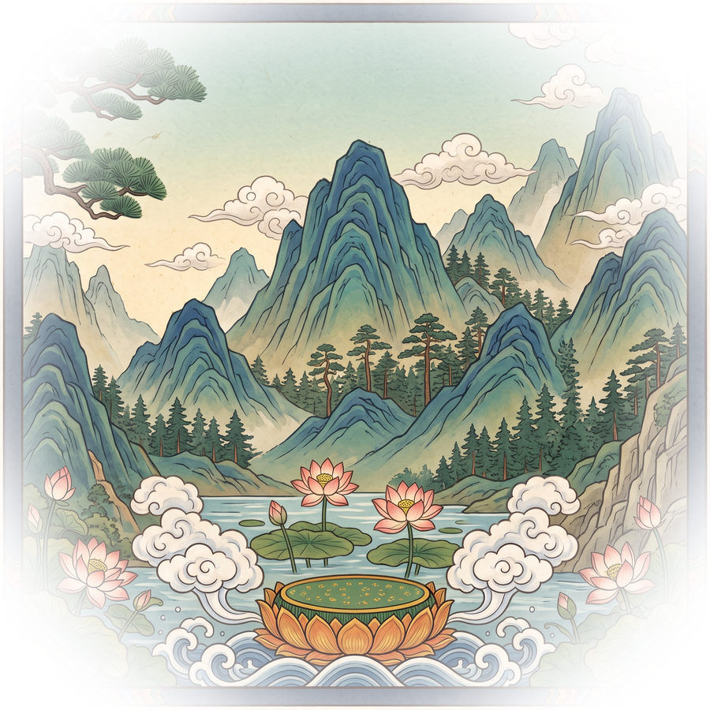
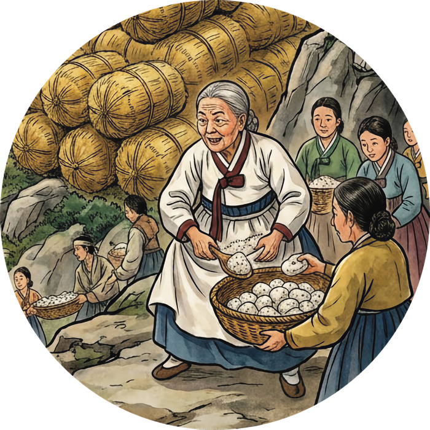

서울 불광동, 부처님佛 빛光 고을洞. 이곳의 이름이 곧 사찰의 소임입니다. 자비희사의 빛으로 세상을 살피고, 나눔과 평등의 등불을 밝히는 세계불교 정법보시종 ‘불광동 절’입니다.


‘마음이 곧 부처다.’ 일어난 마음 바로 그 자리에서 망설임 없이 베풀고 실천하는 마음이야말로 부처의 마음입니다.
높은 사회적 신분만큼 이웃과 나라를 위해 앞장서서 베풀고 헌신하는 도덕적 책임. 밥할머니께서 몸소 실천한 가르침입니다.
‘밥이 곧 하늘.’ 밥 한 끼는 생명을 살리는 가장 성스럽고 엄숙한 존재이며, 보시의 가장 한가운데에 있습니다.
임진왜란(1592년)당시, 임금이 도성을 버리고 가난한 백성들이 피눈물을 흘릴 때, 자기 집 곳간을 열어 굶주린 백성들을 품었던 밀양 박씨 여인. 우리는 그를 ‘밥할머니’라 부릅니다.
선조 임금이 한양을 버리고 파천(播遷)길에 오르자, 가난한 백성들이 굶주림에 빠졌습니다. 밥할머니는 한 치의 망설임 없이 집안의 곳간을 열어 곡식을 풀어 중생들을 품었습니다.
북한산에서 조선군과 명나라 군사가 왜군에 포위되어 전의를 상실하고 있을 때, 노적봉을 볏짚으로 쌓게 하고(노적가리), 북한산 계곡에서 흘러오는 창릉천에 횟가루를 풀어 쌀뜨물로 속이는 다군술책(多軍術策)으로 왜군이 겁을 먹고 포위를 풀게 하여 한·중·일 전투 없이 많은 생명을 구했습니다.
서산대사(휴정 스님)의 승군을 돕기 위해 수많은 여인들을 이끌고 권율 장군이 분전하는 행주산성으로 가 석전용 돌을 행주치마로 나르고, 의군에게 주먹밥을 제공했습니다.
불광동 절은 밥할머니의 보시 정신을 이어 지역사회의 소외된 이웃을 살피고, 나눔과 평등의 가치를 널리 전하기 위해 끊임없이 노력합니다. 한 그릇의 공양이 세상을 밝히는 등불이 되기를 바랍니다.
MZ세대를 비롯한 젊은 불자들과 공감하고 소통하기 위해 SNS와 온라인 채널을 통해 부처님의 가르침을 친근하게 전합니다. 함께 걷는 불자의 길, 그 여정에 여러분을 초대합니다.